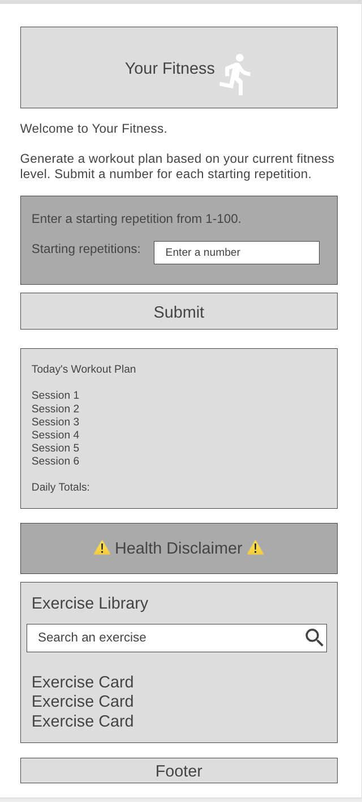

Overview
Purpose
The purpose of this app is to help users create a simple daily workout based on their current fitness level. The user enters a number of repetitions they can currently complete. The application generates a progressive six-session plan for that day. The app also provides a library of exercises that the user can use to learn how to do the exercises.
Audience
The site is designed for beginners, but it also works for any fitness level. The workout generator allows the user to start where they are and creates a plan they can implement throughout the day by gradually improving the number of repetitions they can do over time. This allows any person of any fitness level to improve progressively.
Dynamic elements
JavaScript will be used to create the interactive generator of a personalized workout plan based on the user’s input value as the starting base. When the user submits the form, JavaScript will validate the input, create six sessions with progressively increasing repetitions, and it will calculate the daily totals for the three exercises. It then displays the sessions with progressive repetitions for each exercise. The application also includes a library stored in an object array. Users can search for the exercises using key terms and JavaScript will filter and display the results using DOM manipulation. The library will be stored in an object array and will be displayed using template literals, DOM manipulation, and array methods such as filter() and forEach(). Event listeners will listen for the user input and update the page.
Branding
Website Logo
Style Guide
Color Palette
Palette URL: https://coolors.co/31b8b3-28615f-4ca450-1f2937| Primary | Secondary | Accent 1 | Accent 2 |
|---|---|---|---|
| #31B8B3 | #28615F | #4CA450 | #1F2937 |
Pseudocode for your project
When the page loads: The welcome text is displayed. When the user enters a number for the repetitions and click the submit button: The site reads the user’s input. It validates the value is between 1 and 100. If the value is not in the correct range, an error message is displayed. If the entered number is in the correct range: Six sessions are created. Increase the repetition count by 1 for each of the six sessions. The total repetitions for each exercise is calculated. The workout plan is displayed with the totals. When the user searches the exercise library: It reads the user’s text. The exercise array is filtered. The matching exercises are displayed for the user.
Wireframes
Create wireframes for your project page(s). One for each page and list them here.
Landing page
The wireframe is made for mobile first and will be adjusted to fit larger screens. The exercise cards will show an image, the name of the exercise, the recommended repetition range, and a description. This is shown one after another when the user searches for a key term.
